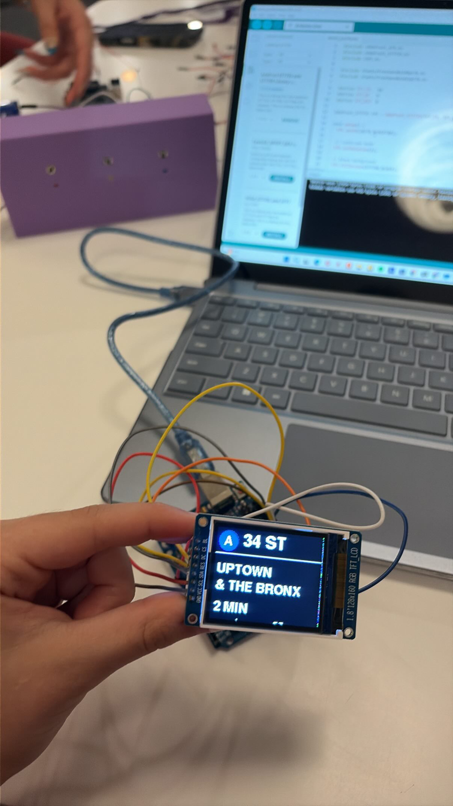
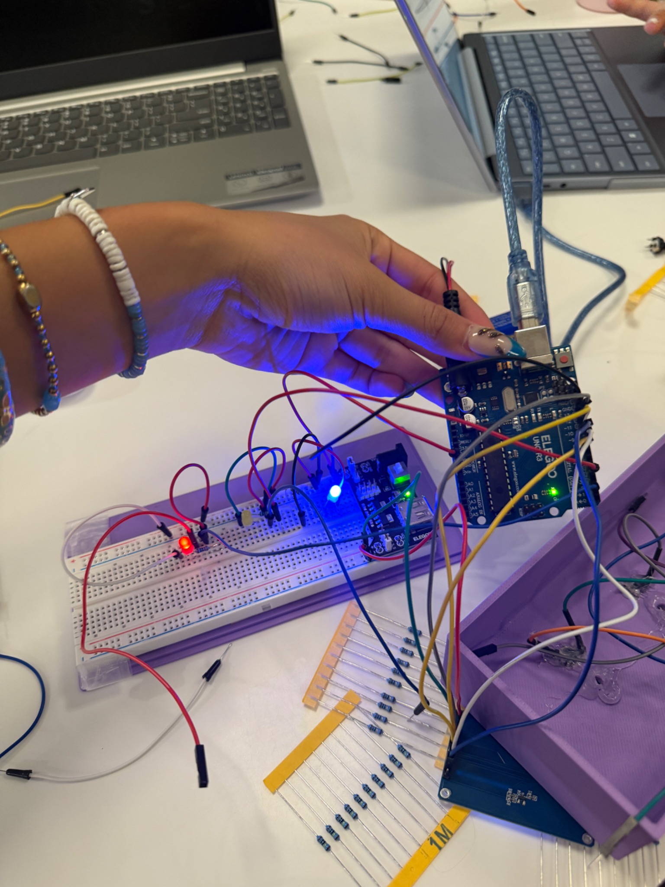
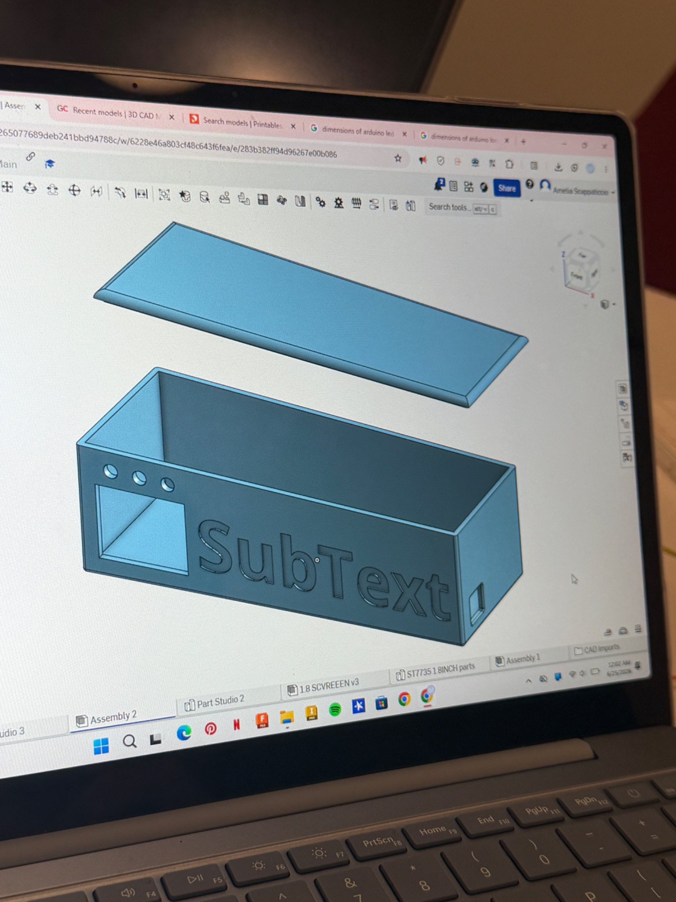

SubText
Subway Text — an accessibility device for NYC subway announcements.
SubText converts subway announcements into clear, color-coded text so riders can understand important information more easily in noisy train environments.

The problem
Subway announcements can be difficult to hear because of train noise, crowded platforms, unclear audio, and accessibility barriers for riders who are Deaf or hard of hearing.
Noisy environments
Announcements can be lost in background noise from trains, crowds, and station activity.
Unclear audio
Important updates may be hard to understand when speakers are muffled or announcements are rushed.
Accessibility gap
Riders should be able to receive key transit information visually, not only through sound.
Our solution
Our team designed SubText, short for Subway Text, to display spoken announcements as readable text on a screen. The interface classifies information by color so riders can quickly understand the type of announcement.
How it works
Spoken announcements are processed through speech recognition and displayed on a small screen. The system organizes the message visually, helping riders notice key information faster.
General information
Delays and reroutes
Emergency announcements
Engineering process
The prototype combined hardware, software, CAD design, and 3D printing to turn the idea into a working accessibility device.


Technologies used
The project used a mix of software, electronics, and fabrication tools.
Team project
SubText was developed collaboratively during the NYU Tandon School of Engineering DII: Design, Innovate & Invent Summer Program.